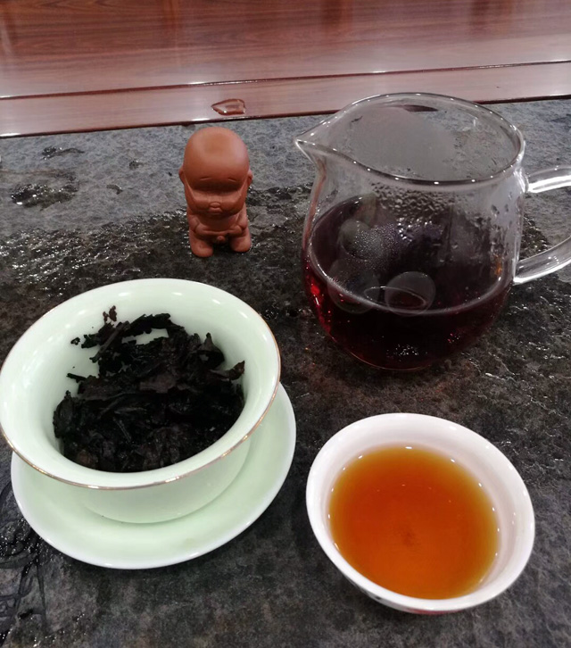

23 FEB
哪一泡普洱茶最好喝
普洱茶比一般茶叶耐泡，一般的熟茶可以冲泡8-10泡。比较新的生茶，可以冲泡到15泡-20泡。年代越久的老茶，耐泡程度越高，直到汤味很淡为止。普洱茶一般用95℃的沸水冲泡，煮纯水或山泉水时不宜过度沸腾，避免水中的氧气过少，影响茶叶的活性。
普洱茶可以多次冲泡，至于第几泡最好喝，每一种茶每个人都会有不一样的感受。俗话说"一道水，二道茶，三道四道是精华，五道六道也不差，七泡有余香，八道有余味，九道十道仍回味"。一般来说 1-2泡茶还没有完全泡开，滋味还没有全部出来，味偏淡；第三泡的冲泡时间建议比第二泡长，大约30-40秒。而从第四泡开始，我们需要通过细心观察汤色，把握溶出物质的多寡来控制冲泡的时间。冲泡次数越多茶水浓度越淡，则冲泡时间也就可以越长。
很多人说，第3-5泡时普洱茶口感最好，这样说有一定道理。不过个人认为，3-5泡茶确切地说是各方面展现最好的，却不能说是最好喝的，毕竟每个人对好喝的认知不一样。有的人喜欢滋味比较浓烈一点的，也就认为滋味尽出的那几泡好喝；而有的人比较喜欢滋味寡淡的茶，那么会觉得6-7泡之后苦涩尽褪、入口清甜的感觉更好。
不管你喜欢什么口味的普洱茶，我们都希望每个爱普洱茶的人也可以静下心来一泡一泡品茶，更加透彻地感受每一款茶的不同，真正喝懂普洱茶的韵味，毕竟爱茶懂茶品茶才是我们的终极追求，而无需纠结于耐不耐泡，哪一泡好喝。